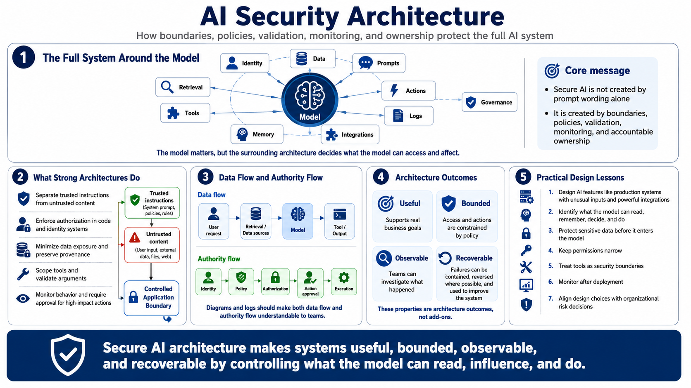

Course Summary and Key Takeaways
Connecting to LMS... Progress: in progress

Narration
AI security architecture protects the full system around the model: identity, data, prompts, retrieval, tools, memory, integrations, actions, logs, and governance. The model matters, but the surrounding architecture decides what the model can access and affect. A secure AI system is not created by prompt wording alone. It is created by boundaries, policies, validation, monitoring, and accountable ownership.
Strong architectures separate trusted instructions from untrusted content. They enforce authorization in code and identity systems. They minimize data exposure, preserve source provenance, scope tools, validate arguments, monitor behavior, and require human approval for high-impact actions. They also make diagrams and logs clear enough that teams can understand both data flow and authority flow.
AI systems should be useful, bounded, observable, and recoverable. Useful means they support real business goals. Bounded means access and actions are constrained by policy. Observable means teams can investigate what happened. Recoverable means failures can be contained, reversed where possible, and used to improve the system. These properties are architecture outcomes, not add-ons.
The practical lesson is to design AI features like production systems with unusual inputs and powerful integrations. Identify what the model can read, remember, decide, and do. Protect sensitive data before it enters the model. Keep permissions narrow. Treat tools as security boundaries. Monitor after deployment. Align every design choice with organizational risk decisions.